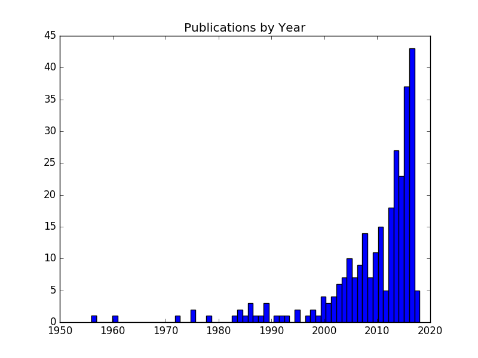

Teaching Programming in the Wild
Back in 2007, Jorge Aranda published a paper called “Requirements in the Wild”. It won an award for “most innovative paper” because it was the first one in the 15-year history of the Requirements Engineering Conference to look at small companies rather than large ones. If that doesn’t strike you as odd, imagine if economists had only ever studied how Walmart and Amazon set prices, while ignoring everyone smaller.
I’ve been thinking about that paper a lot while fleshing out the bibliography for the next edition of How to Teach Programming (and Other Things). Of the 282 papers on computing education I’ve gone through so far, the majority by far only look at teaching in formal institutional classrooms or their online imitators. Those that do look at bootcamps and other free-range settings mostly look at outcomes (i.e., how many students get jobs) rather than at teaching methods or curriculum.
I think there are at least three opportunities here: to learn what and how free-range educators teach, to build bridges between those educators and researchers along the way, and to cast fresh light on practices in institutional classrooms. If anyone is tackling this, I’d enjoy hearing from you.
